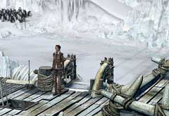
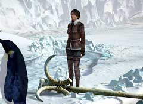
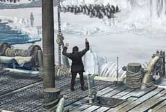
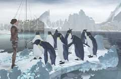

|
止まってしまった船
冒険にトラブルは付き物なのだろうか? あなたとハンスが乗った船は、見知らぬ氷山で止まってしまった。原因は何か? これは、誰かがしくんだワナなのか? とにかく、旅を続けるためには、目の前の問題を解決しなくてはならない。 あなたがまずやらなければならないことは、 ・外へ出て船が止まった原因を見つける ・氷山に引っかかったイカリを取り外す ・船へ再度乗る ということである。

・上で書いてあるとおり、外へ出なくては始まらない ・外へ出てイカリを探そう

・このイカリを取り外すにはどうしたらよいか? ・手で持ち上げるのは不可能である。 ・テコの原理を使うなり、床を砕くなりするには”固いもの”が必要である ・氷山を注意深く調べ、使えそうなものを見つけよう

・イワンが現れ、船と氷山をつなぐエレベーターを上に上げてしまった ・船に戻る方法を探らなければならない

・イカリを取り外すことで、氷山のさらに奥へと移動できるはずだ ・このペンギンたちのいる場所には近づけない ・ペンギンたちをどかし、この突き出た部分に乗れるようにしてみよう
| 次へ >> |
|